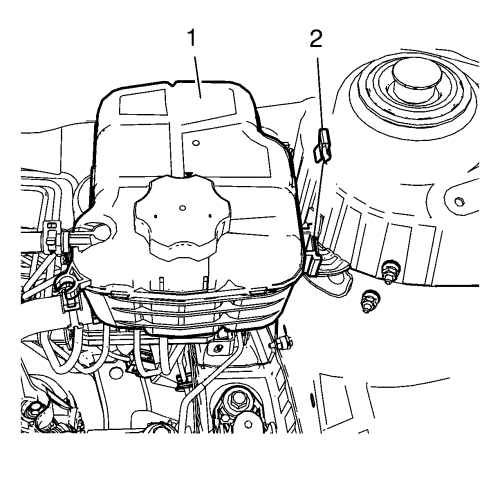
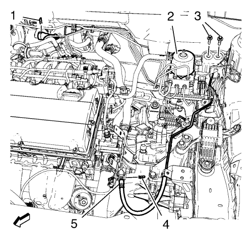

- Desmonte la bandeja de la batería. Consultar Sustitución de la bandeja de la batería .

Nota: NO desconecte los tubos flexibles del refrigerante del motor.
- Desmonte el clip (1) del depósito de expansión del radiador.
- Desmonte el depósito de expansión del radiador.
Ponga a un lado el depósito de expansión del radiador.

Nota: Antes de desconectar el tubo delantero del cilindro actuador del embrague, saque el líquido de embrague/frenos del depósito.
- Desmonte el retén (1, 5) del tubo delantero del cilindro actuador del embrague.
- Desmonte los pernos (3) del soporte de la válvula moduladora de presión del freno.
- Ponga la válvula moduladora de presión del freno (2) a un lado.
- Extraiga el tubo delantero del cilindro actuador del embrague del retén.
- Extraiga el tubo delantero (4) del cilindro actuador del embrague.